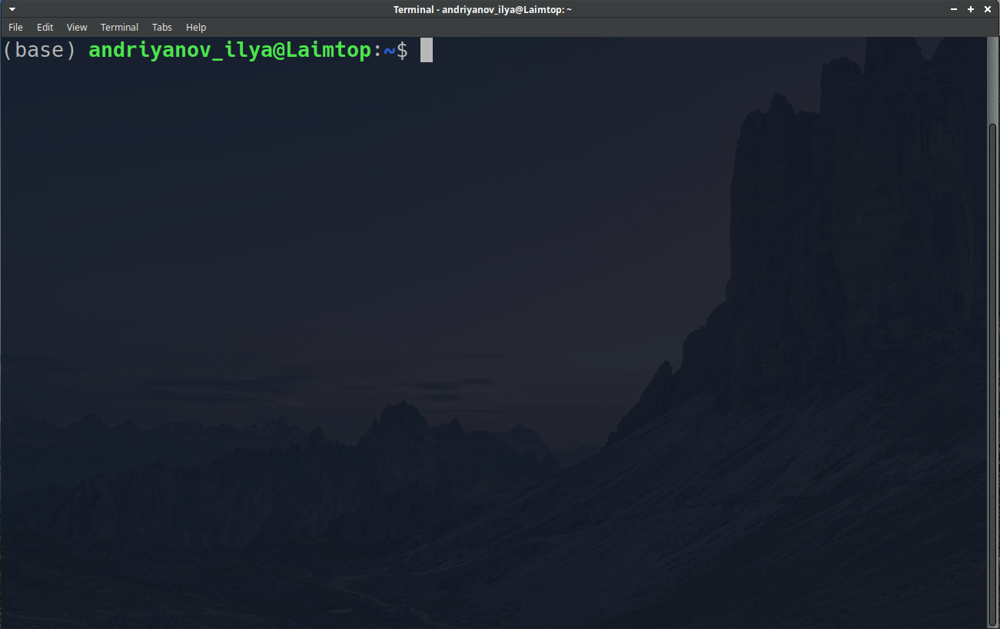
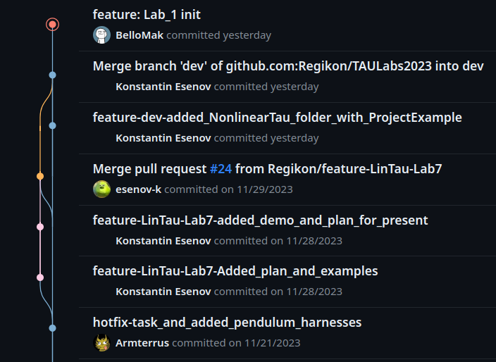

Этот файл примерно следует проведенной на лабораторной работе №1 деятельности и предназначен для более подробного освещения трудных и не только моментов.
Оглавление
Настоящий документ создан при помощи простого языка разметки Markdown, и если вы читаете html версию данного текста, то с исходным текстом можете ознакомиться в файле DemoExplanation.md. Markdown повсеместно используется при оформлении документации репозиториев, а потому крайне полезен для изучения, если вы планируете работать с кодом (и не только).
Если вы выполнили предварительные шаги и установили git, то у вас в любом случае появилась новая программа - эмулятор терминала (далее просто терминал), с которой мы и будем иметь дело. Ниже представлен типичный вид окна терминала. 
Основной элемент окна - строка приглашения, и состоит она из следующих элементов:
Возможно вам не очень понятно, но текущая директория <~> является сокращением, которое обозначает домашнюю директорию пользователя. В моем случае это /home/andriyanov_ilya. В вашем же случае она определяется значением переменной среды HOME вашей ОС (или подОС, в случае WSL).
Строка приглашения терминала ожидает выполнения команд. Командой, вообще говоря, может являться не только операции, что мы перечислим ниже, но также и вызовы обычных программ. К примеру, если ввести в терминал vi, то произойдет запуск одноименного текстового редактора (если он у вас, конечно же, установлен). Терминал может запустить любую вашу программу, только если она расположена в директории, определяемой переменной среды PATH, или же в текущей рабочей директории.
Помимо запуска программ, терминал также поддерживает выполнение стандартных операций (некоторые из них тоже являются программами, а некоторые обрабатываются самим эмулятором терминала):
Ввиду того что ваш терминал ведет свою собственную файловую систему по модели семейства операционных систем UNIX, то вам понадобятся некоторые сведения о записи путей директорий и файлов.
Как и в других системах, путь к файлу(директории) может быть указан абсолютно, начиная с корневой директории /, или относительно текущей. Рассмотрим оба способа на примере.
Абсолютный путь:
/usr/bin/bash
Относительный путь:
./WorkRepo/NonLinearTAU/Lab1/Homework_Assignment.pdf {или же}
../WorkRepo/NonLinearTAU/Lab1/Homework_Assignment.pdf
Итак, выше представлены примеры адресации файлов в стиле UNIX. Абсолютный путь нисколько не отличается от стиля записи Windows, за исключением того, что в качестве разделителя используется прямая косая черта, а не обратная.
Относительный же путь может быть записан, начиная с одной или двух точек. Одна точка символизирует рабочую директорию, две точки - родительскую директорию для текущей.
Стоит отметить, что многие программы без проблем воспринимают такой стиль записи в случае относительной адресации файлов на любой ОС, в отличие от стиля Windows (с разделитилем в виде обратной косой черты). Поэтому в своей работе (например в MATLAB) крайне рекомендуется для переносимости ваших программ использовать пути в стиле UNIX
Если вы открыли терминал на Windows (не путать терминал с командной строкой cmd), то у вас установлен либо Cygwin, либо WSL.
В случае Cygwin директории файловой системы Windows располагаются по адресу: /cygdrive/. (В ней находятся директории, названия которых представляют собой буквенные литералы логического диска (C, D и т.д.), а далее вглубь них всё так же, как и на Windows).
Если вы пользуетесь WSL, то вся файловая система Windows располагается в директории /mnt/.
При помощи финального проекта вы могли понять, что работа в команде над программным продуктом может превратить последний в хаотически склеенный кусок из файлов, а потому требуются специальные инструменты, которые помогут этого избегать. Одним из них является система контроля версий.
Система контроля версий - это специальная программа, которая способна отслеживать некоторый перечень файлов на предмет появления в них изменений, строго контролировать эти изменения, хранить их историю а также помогать с интеграцией наработок нескольких пользователей
Множество файлов, которые как единое целое отслеживаются системой контроля версий, а также служебные файлы системы контроля версий, к ним относящиеся, в совокупности называют репозиторием.
Поговорим немного о классификации систем контроля версий (СКВ). Нас будет интересовать один критерий. По нему их делят на централизованные и децентрализованные. Централизованные СКВ хранят весь репозиторий в одном экземпляре на главном сервере, пользователи же получают лишь конкретную версию файлов репозитория и вносят свои изменения на сервер путем обращения к СКВ. В случае использования децентрализованной системы каждый пользователь имеет у себя полную копию всего репозитория (включая историю изменений) и может переключиться на любую существующую версию.
Одной из наиболее популярных систем в наше время является децентрализованная бесплатная система git с открытым исходным кодом. Именно поэтому она и выбрана для ознакомления.
Упрощенно структуру репозитория git можно представить в виде ориентированного графа, очень похожего на дерево. Узлы этого графа символизируют зафиксированную версию и называются коммитом (commit). Ребра же представляют собой изменения последующего коммита по сравнению с предыдущим, и именно разности между коммитами git и хранит в репозитории.
Отдельные линейные структуры (ветви этого псевдодерева) называются ветками изменений. Репозиторий обязан иметь хотя бы одну такую ветку (главную ветку master (или main)), а обычно их бывает не меньше двух.

Создать репозиторий можно двумя способами:
Для создания пустого репозитория используется команда
git initОна создаст в текущей директории каталог .git, который символизирует наличие репозитория. Это заставит git отслеживать все изменения, происходящие в рабочей директории.
Клонирование репозитория осуществляется при помощи команды git clone. Следующий код скачает в текущую директорию репозиторий по ЛР с сервера хранения репозиториев GitHub.
git clone https://github.com/BelloMak/TAU_Labs_2023.gitТак как клонирование является сетевым взаимодействием, то для него используется какой-то протокол. Верхняя команда использует для клонирования протокол http. Тем не менее, git также поддерживает и работу по протоколу ssh. В случае клонирования публичных репозиториев особой разницы нет. Но когда вы попытаетесь склонировать не публичный, а приватный репозиторий, или же попытаетесь сделать некоторые другие сетевые действия, то сервер, с которым вы взаимодействуете, запросит логин и пароль от вашего аккаунта на нем. В какой-то момент вам надоест каждый раз вводить логин и пароль, и вы перейдете к протоколу ssh, который для авторизации использует ключи шифрования.
По результатам выполнения команды вы получите полную копию нашего репозитория, сможете пользоваться файлами в нем и даже самостоятельно вносить в него свои локальные изменения.
Одной из главных команд git по работе с репозиториями является команда git status, позволяющая вывести текущую ситуацию:
С помощью команды git add <файл> можно добавить файл в отслеживаемые. Соответствующая ему команда удаления - git rm <файл>. Также команда add используется, чтобы добавить измененный файл в очередь на новый коммит.
Команда git branch выведет список существующих веток в репозитории. Если написать git branch my_branch, то будет создана новая ветка my_branch.
С помощью команды git checkout my_branch можно переключиться на ветку my_branch.
Команда git log выведет список всех коммитов в текущей ветке изменений (q, чтобы выйти, если терминал вас не отпустил).
Команда git commit используется для создания коммита. Следующий код создаст коммит с комментарием init
git commit -m "init"С примерами работы всех этих (или почти) команд, можете ознакомиться в демо коде ниже.
В какой-то момент ваш склонированный репозиторий устареет. Это случится, когда кто-то внесет изменения на сервер. Чтобы “подтянуть” новую версию репозитория, необходимо вызвать последовательность команд
git fetch
git mergeПервая скачает изменения, а вторая - объединит их с вашей локальной версией репозитория. На самом деле, для этой последовательности есть синоним - команда git pull. Отсюда и возникло слово “подтягивание”.
cd ~
mkdir Projects
cd Projects
git clone https://github.com/BelloMak/TAU_Labs_2023.git
cd TAU_Labs_2023
git status
git log
rm -r LinearTAU
git status
git restore ./LinearTAU
cd ..
mkdir my_repo
cd my_repo
git init
git status
touch README.md
git status
git add README.md
git commit -m "Initial Commit"
git config --global user.email "john_doe@example.com"
git config --global user.name "John Doe"
git commit -m "Initial Commit"
git logДалее по сценарию демо идет создание ssh-ключа. Инструкция по этой процедуре и также указания по его добавлению в ваш аккаунт github лежат отдельно где-то около этого файла. ssh-ключ необходим для сетевого взаимодействия с любым сервером по протоколу ssh. Удобство последнего познается на практике, более сказать нечего.
Напоследок скажем, что КРАЙНЕ рекомендуется ознакомиться с ссылками по git в необязательной части ДЗ к этой ЛР.